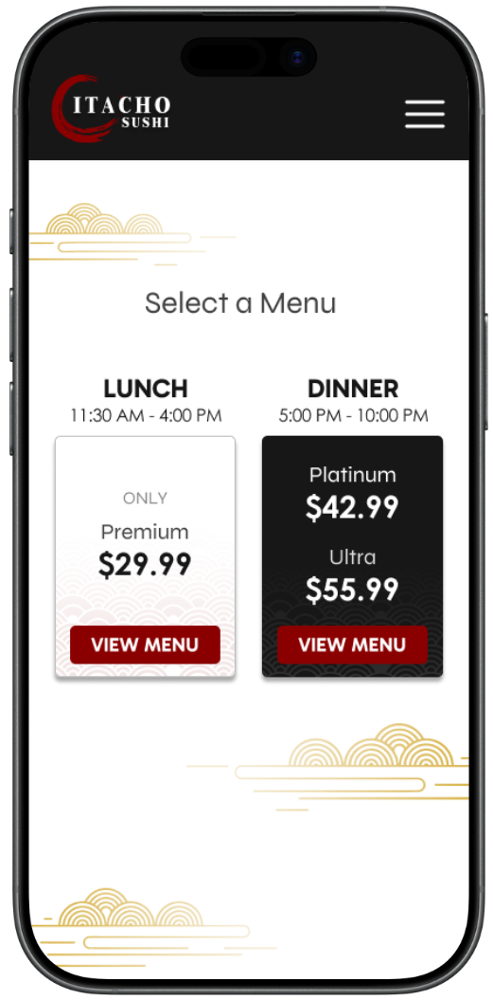
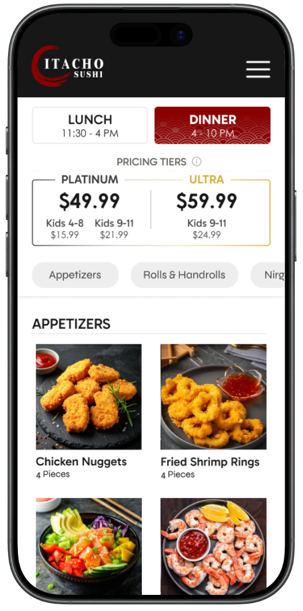
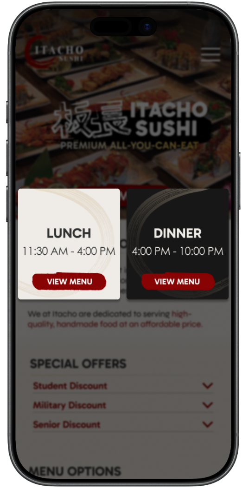
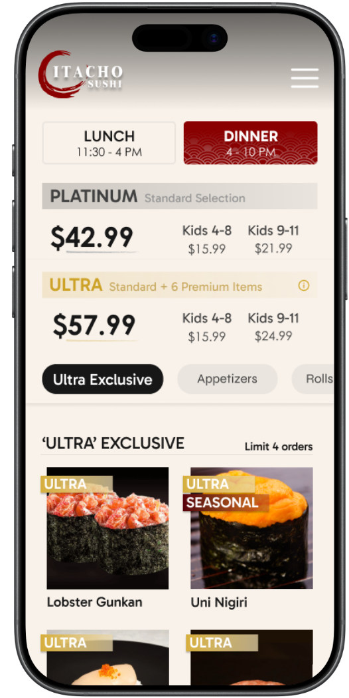
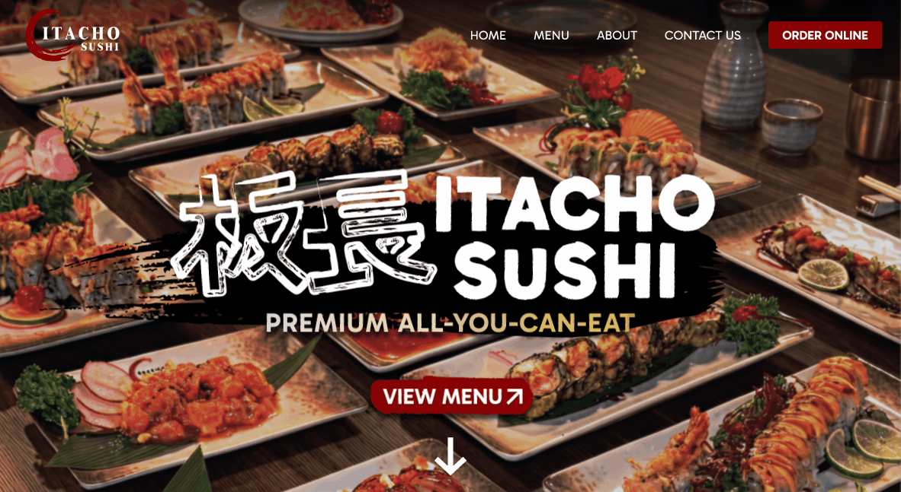
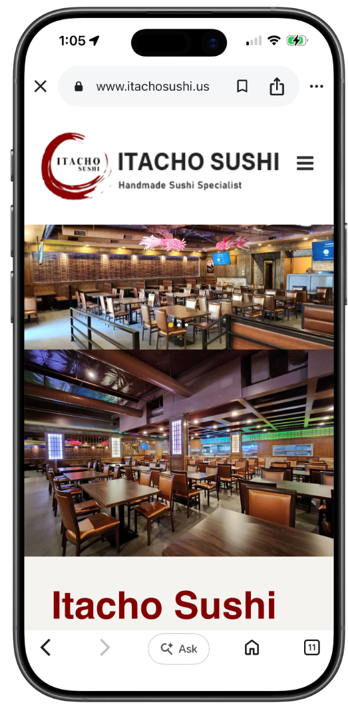
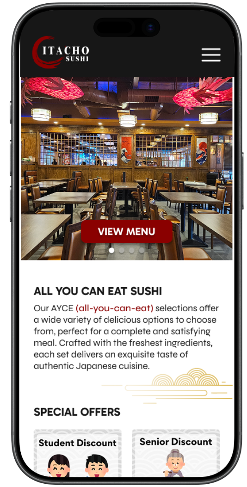
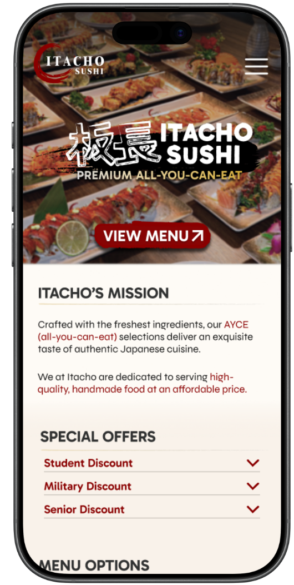
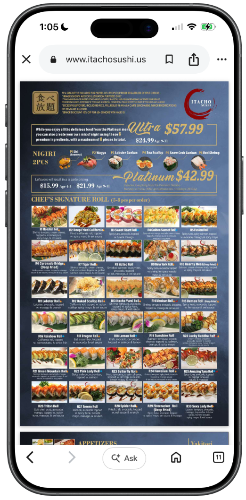
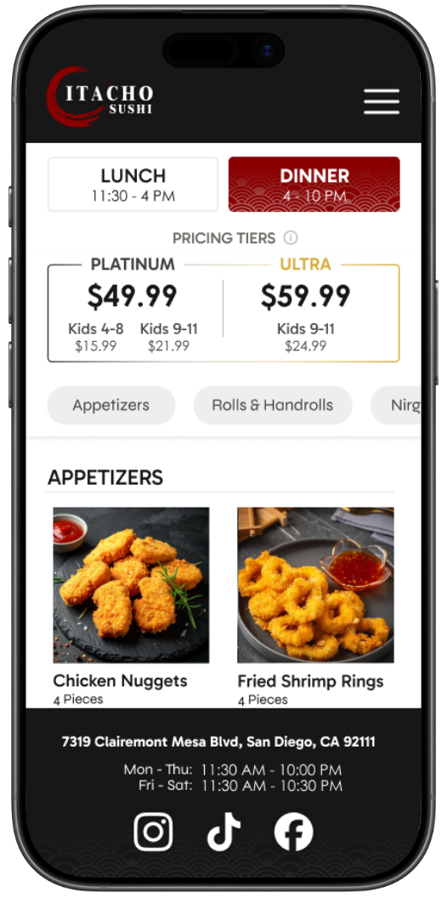

Branding, User Flows, Product Thinking, Prototyping, Information Architecture, Client Collaboration
Tools
Figma
Timeline
April 2026 - June 2026
Overview
Restructuring a sushi restaurant's menu so customers can understand pricing and find dishes with confidence
As part of a three-person design team, I partnered with Itacho Sushi to overhaul their desktop and mobile website. The all-you-can-eat (AYCE) menu was
extensive and its information architecture unclear, which made it hard for customers to understand pricing, compare menu tiers, and find dishes that fit their preferences.
The goal was not only a new interface. It was to restructure how information is presented, while preserving Itacho Sushi's identity.
Client
Itacho Sushi
Scope
Desktop and mobile website
Focus
Information architecture, menu and pricing clarity
Constraint
Keep the restaurant's existing brand identity
Problem Statement
A complicated menu structure raised cognitive load and slowed discovery
Browsing the original website was harder than it needed to be. Customers had to work out how lunch and dinner differed, what three pricing tiers included, and where to find dishes that fit their dietary needs.
That left customers with three recurring problems
Lunch vs. dinner
Lunch and dinner offerings were hard to tell apart
Three tiers
Three AYCE pricing tiers were difficult to understand and compare
Dietary needs
Dishes matching dietary preferences were hard to locate
My Approach
The challenge was not missing information, but how it was presented
With a large lunch and dinner menu across three pricing tiers, I focused on making the experience easier to navigate without overwhelming customers. Rather than adding interactions, I prioritized clear hierarchy and better scanability so people could compare options and decide quickly.
Three principles guided the structure
Hick's Law
Fewer choices
Simplify the menu structure so customers face fewer choices at once
Jakob's Law
Familiar patterns
Organize information in patterns customers already know from other sites
Hierarchy and scanability
Easy to compare
Make pricing, tiers, and categories easy to compare at a glance
Research Goals
Testing the new structure against four user goals before visual design
Because the original site lacked clear structure, I used an iterative mid-fidelity prototype to validate the information hierarchy and layout before moving to visual design. I evaluated it against four goals.
Each round of testing checked whether customers could
Compare
AYCE pricing and tiers
Navigate
lunch, dinner, and menu tiers
Find
dishes by dietary needs
Locate
hours, address, and key details
Validation and Iteration
Two issues from testing and how the design changed
01
Pricing tiers were understood, but not connected to the dishes they included
What I heard
Users understood the tiers but couldn't tell which dishes each one included.
What I changed
Pricing now lives only inside the menu with tier badges,
an Ultra Exclusive section, and clear ordering limits
Before


After


02
The landing page didn't reflect the restaurant's identity
What I heard
The generic interior carousel said nothing about Itacho's identity
What I changed
A focused hero now foregrounds craftsmanship, with a Home link, clearer buttons, and
a scroll cue
Before
After

Final Design
A validated structure carried into the high-fidelity interface
Early testing let me resolve usability issues, strengthen content hierarchy, and connect related information more clearly. That foundation guided the high-fidelity decisions, so the final experience is visually cohesive as well as intuitive and functional.
Original LayoutMid-Fidelity WireframeHigh-Fidelity Redesign





Reflection
You just gotta roll with it
Working with Itacho Sushi taught me that meaningful design does not come from having every answer, but from being willing to explore, question, and adapt. Uncertainty became an essential part of my design process. It pushed me to challenge my assumptions and iterate until the experience better matched the client's vision and their users' needs.
The hours I spent with my team exploring directions, discussing decisions, and revisiting designs turned my early concepts into a more intentional experience. I learned that strong design comes from being open to change rather than searching for the perfect answer too early.
Moving forward, I approach each challenge with empathy, curiosity, and patience, and treat uncertainty as part of discovery.
Interactive Prototype
Try the redesigned experience!
Although we weren't involved in implementation, the restaurant purchased our designs
and brought them to life! You can visit the site at itachosushi.us.